MANTENIMIENTO Y REPARACIÓN
SERVICIO EN VEHÍCULO
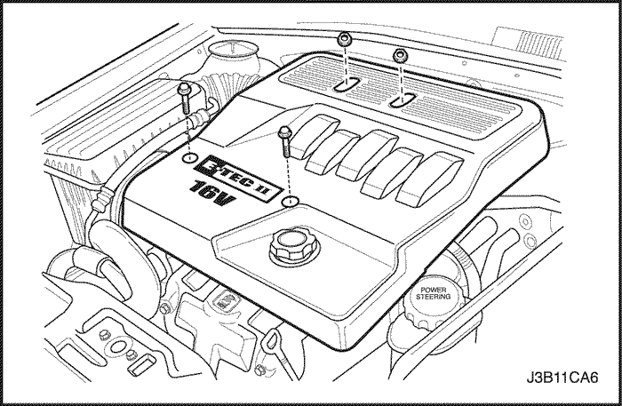


Cubierta del motor
Procedimiento de desmontaje
- Quite los tornillos y las tuercas de la cubierta del motor.
- Desmonte la tapa del motor.
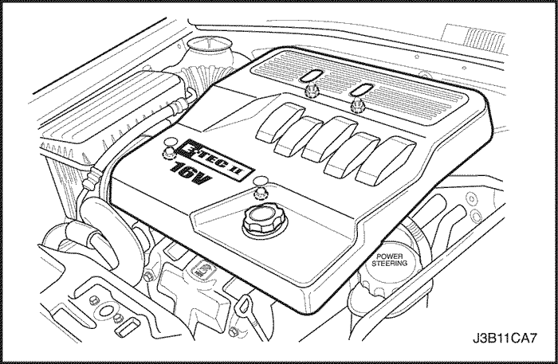
procedimiento de montaje
- Coloque la cubierta sobre el motor.
- Ponga los tornillos y las tuercas de la tapa del motor.
Apretar
Apriete los tornillos y las tuercas de la cubierta del motor hasta 10 N•m (89 lb-pie).
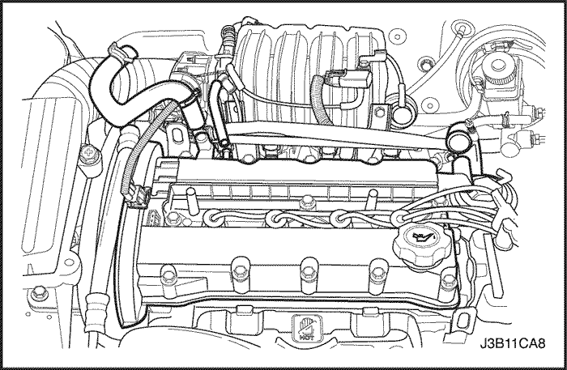
Cubierta de árbol de levas
Procedimiento de desmontaje
- Desconecte el cable negativo de la batería.
- Desmonte la tapa del motor. Consulte el apartado "Motor" de esta sección.
- Desmonte de la cubierta de árbol de levas el manguito del respiradero, el manguito de ventilación y el conector del cableado del sensor de posición de levas.
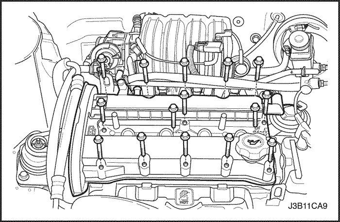
- Retire los cables de encendido de la bujía.
- Quite los tornillos y desmonte la tapa de los árboles de levas.
- Desmonte la junta de la cubierta de árbol de levas.
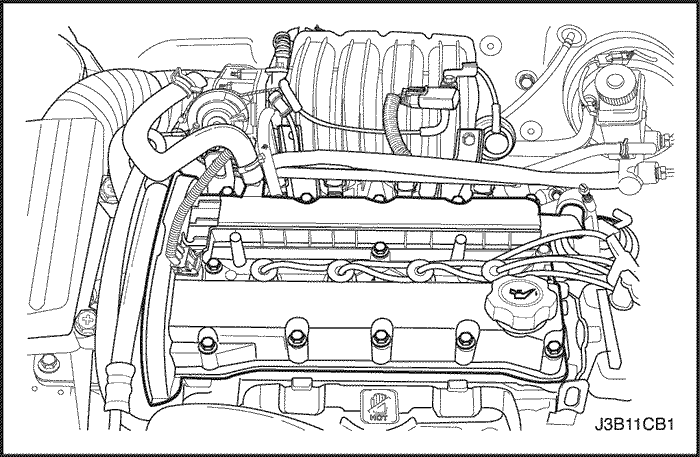
procedimiento de montaje
- Coloque la junta en la cubierta de árbol de levas.
- Coloque la cubierta de árbol de levas sobre el bloque del motor.
- Coloque los tornillos de la cubierta de árbol de levas.
Apretar
Apriete los tornillos de la cubierta de árbol de levas hasta 10 N• m (89 lb-pie).
- Coloque los cables de encendido a las bujías y conecte el manguito del respiradero, el manguito de ventilación y el conector de cableado del sensor de posición de levas en la cubierta de árbol de levas.
- Monte la tapa del motor.
- Conecte el cable negativo de la batería.
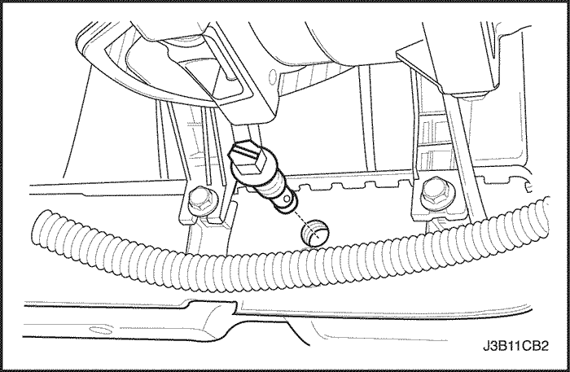
Colector de admisión
Procedimiento de desmontaje
- Desmonte el fusible de la bomba de combustible.
- Ponga el motor en marcha. Después de calarse, arránquelo durante 10 segundos para liberar la presión del sistema de combustible.
- Desconecte el cable negativo de la batería.
- Vacíe el refrigerante del motor. Consulte la Sección 1D, Sistema de refrigeración del motor.
- Desmonte la cubierta del motor y el cuerpo del acelerador. Consulte la Sección 1F, Controles del motor.
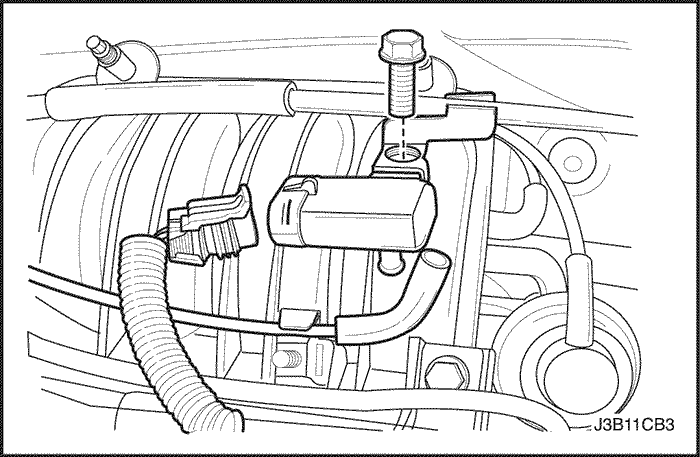
- Desenchufe el conector del sensor de presión del colector de admisión, el tornillo de fijación y el manguito de vacío.
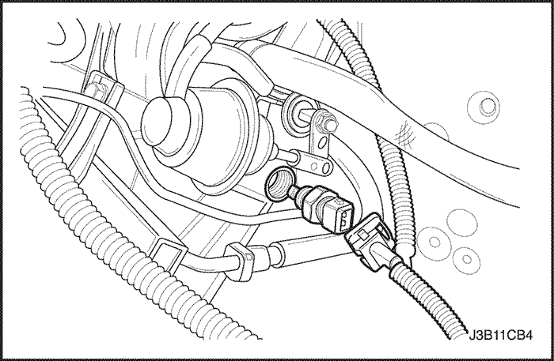
- Desenchufe el conector del sensor de temperatura del aire en el colector (MAT) y desmonte el MAT.
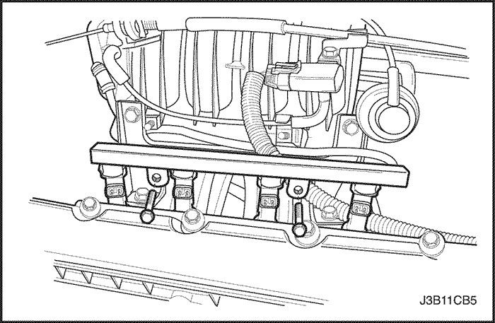
- Desmonte el soporte superior del colector de admisión.
- Quite el tornillo y desmonte la rampa de inyectores.
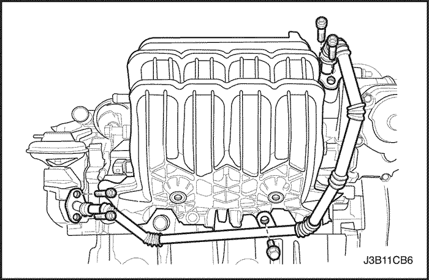
- Retire todos los manguitos de vacío del colector de admisión, incluido el manguito de PCV y el manguito de vacío del servofreno.
- Desmonte el tubo de recirculación de gases de escape (EGR).
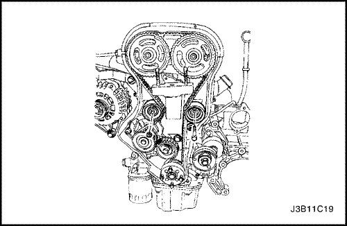
- Desmonte el alternador. Consulte la sección 1E, Sistema eléctrico del motor.
- Desmonte el soporte del colector de admisión.
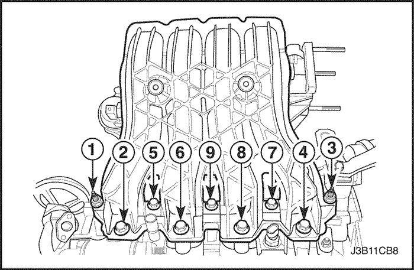
- Quite los tornillos/las tuercas de fijación del colector de admisión en la secuencia indicada.
- Desmonte el colector de admisión y su junta.
- Limpie las superficies de cierre del colector de admisión y de la culata.
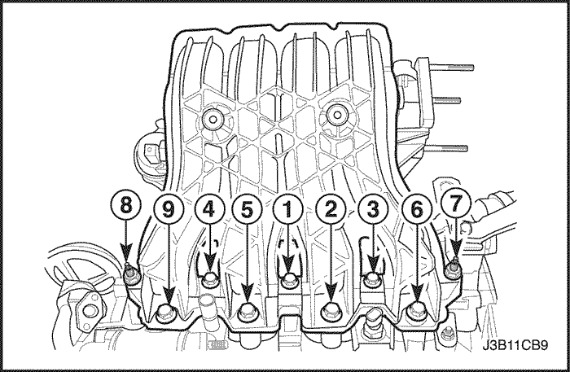
procedimiento de montaje
- Monte la rampa de inyectores.
Apretar
Apriete los tornillos de la rampa de inyectores hasta 25 N•m (18 lb-pie).
- Coloque una junta nueva y monte el colector de admisión.
Apretar
Apriete los tornillos y las tuercas del colector de admisión hasta 25 N•m (18 lb-pie).
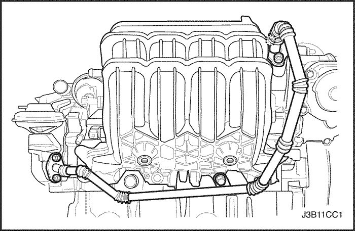
- Coloque el tubo de recirculación de gases de escape (EGR).
Apretar
Apriete los tornillos del tubo de recirculación de gases de escape (EGR) hasta 10 N•m (89 lb-pie).
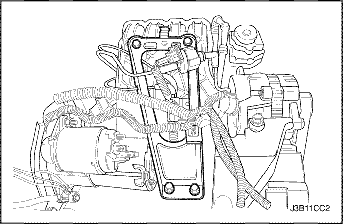
- Monte el soporte del colector de admisión.
Apretar
Apriete los tornillos superiores del soporte del colector de admisión hasta 25 N•m (18 lb-pie) y los tornillos inferiores hasta 45 N•m (33 lb-pie).
- Monte el alternador.
- Monte la rampa de inyectores.
- Coloque los tornillos de la rampa de inyectores.
- Monte el soporte superior del colector de admisión.
- Coloque los tornillos del soporte superior del colector de admisión.
- Coloque el sensor de temperatura del aire en el colector (MAT) y enchufe el conector del MAT.
- Monte el sensor de presión del colector de admisión y el manguito de vacío.
- Monte el cuerpo del acelerador y la cubierta del motor.
- Llene el sistema de refrigeración del motor. Consulte la Sección 1D, Sistema de refrigeración del motor.
- Coloque el fusible de la bomba de combustible y conecte el cable negativo de la batería.
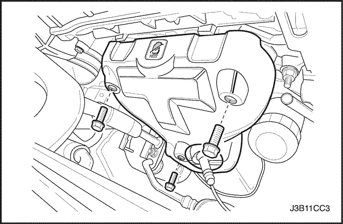
Colector de escape
Procedimiento de desmontaje
- Desconecte el cable negativo de la batería.
- Desenchufe el conector del sensor de oxígeno.
- Desmonte el escudo térmico del colector de escape.
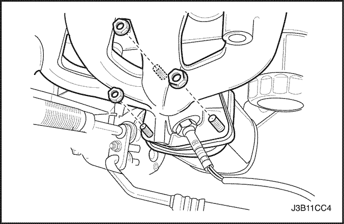
- Quite las tuercas del colector de escape del convertidor catalítico de minioxidación.
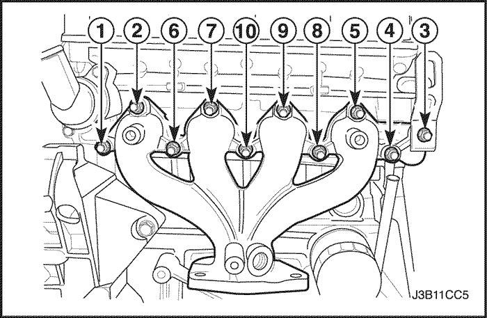
- Quite las tuercas de fijación del colector de escape en la secuencia indicada y desmonte el colector de escape.
- Retire la junta del colector de escape.
- Limpie las superficies de cierre del colector de escape y de la culata.
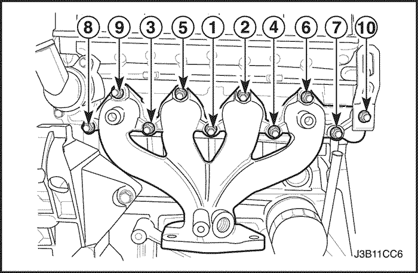
procedimiento de montaje
- Monte el colector de escape y la junta.
- Coloque las tuercas de fijación del colector de escape y apriete en la secuencia indicada.
Apretar
Apriete las tuercas de fijación del colector de escape hasta 25 N•m (18 lb-pie).
- Coloque las tuercas que unen el colector de escape al convertidor catalítico.
Apretar
Par de apriete 40 N•m (30 lb-pie).
- Monte el escudo térmico.
Apretar
Apriete los tornillos del escudo térmico hasta 13 N•m (10 lb-pie).
- Enchufe el conector del sensor de oxígeno.
- Conecte el cable negativo de la batería.
Culata y junta
Herramientas necesarias
Dispositivo de ajuste de la correa de distribución J-42492
Medidor de par angular KM-470-B
Procedimiento de desmontaje
- Desmonte el fusible de la bomba de combustible.
- Ponga el motor en marcha. Después de calarse, arránquelo durante 10 segundos para liberar la presión del sistema de combustible.
- Desconecte el cable negativo de la batería.
- Desconecte del colector de admisión el terminal de masa del módulo de control electrónico (ECM).
- Vacíe el refrigerante del motor. Consulte la Sección 1D, Sistema de refrigeración del motor.
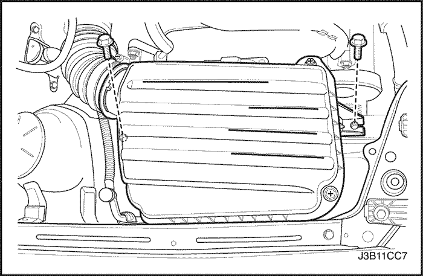
- Vacíe el aceite del motor y quite la cubierta de árbol de levas. Consulte esta misma sección.
- Desmonte el alojamiento del filtro del aire.
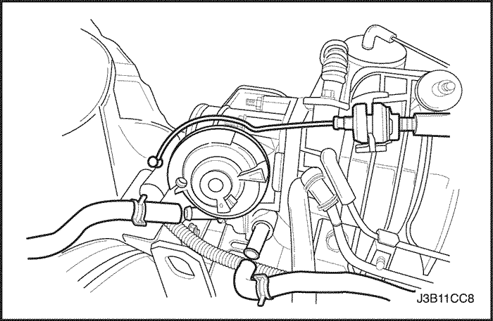
- Desmonte el cable del acelerador y los manguitos de refrigerante de entrada/salida.
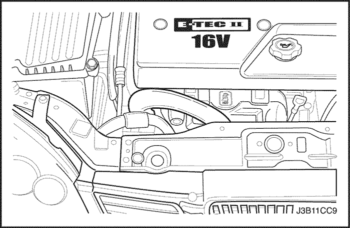
- Retire el manguito superior del termostato.
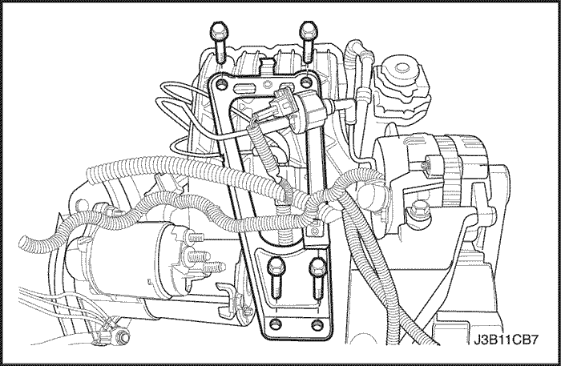
- Desmonte el sensor de presión del colector de admisión, el sensor de temperatura de aire de admisión y el sensor de temperatura del refrigerante.
- Desmonte el soporte del colector de admisión.
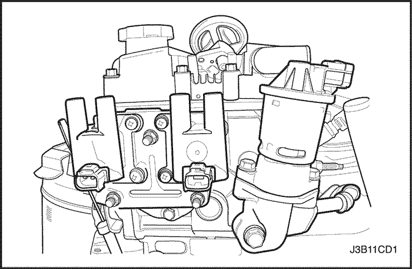
- Retire todos los manguitos de vacío del colector de admisión, incluido el manguito de vacío del servofreno.
- Retire los cables de encendido de las bujías.
- Desmonte de la culata la bobina del sistema de encendido directo (DIS) y el soporte.
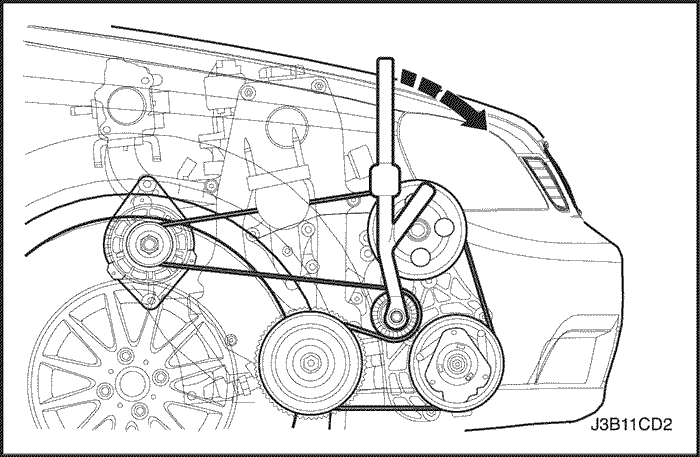
- Para desmontar la correa de transmisión de los accesorios, haga girar el tornillo de la polea del tensor en el sentido de las agujas del reloj con la ayuda del DW110-080. Consulte la Sección 6B, Bomba de la dirección asistida.
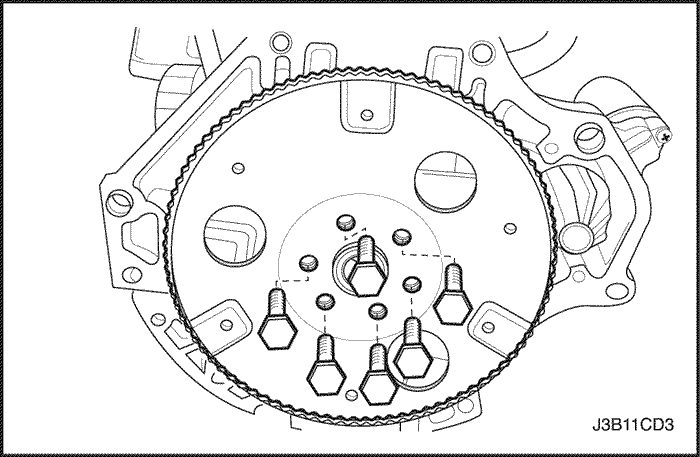
- Desmonte el neumático delantero del lado del pasajero. Consulte la Sección 2E, Neumáticos y ruedas.
- Desmonte la protección del paso de rueda delantero.
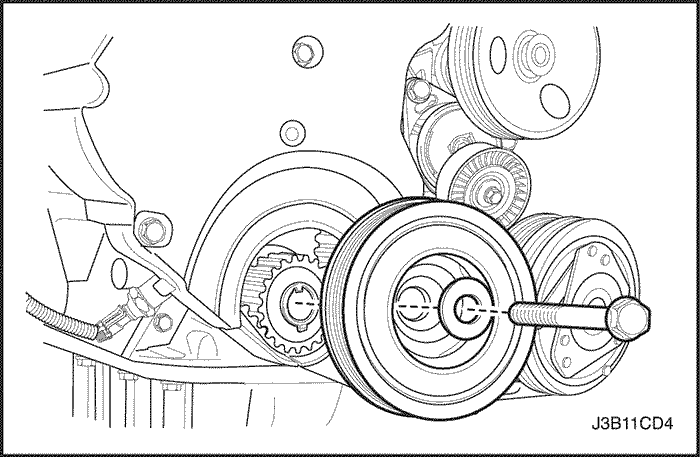
- Quite los tornillos de la tapa superior delantera de la correa de distribución.
- Desmonte la tapa superior delantera de la correa de distribución.
- Alinee las marcas de la puesta a punto de los piñones de los árboles de levas.
- Desmonte la polea del cigüeñal.
- Quite los tornillos inferiores y desmonte la tapa delantera de la correa de distribución.
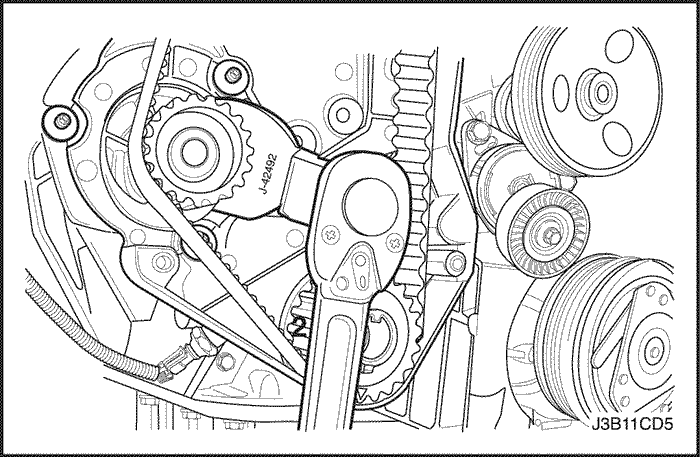
- Afloje un poco los tornillos de retención de la bomba de agua.
- Haga girar la bomba de agua en sentido contrario al de las agujas del reloj con la ayuda del dispositivo de ajuste de la correa de distribución J-42492 para reducir la tensión de la correa de distribución.
- Desmonte la correa de distribución. Consulte el apartado "Correa de distribución " de esta sección.
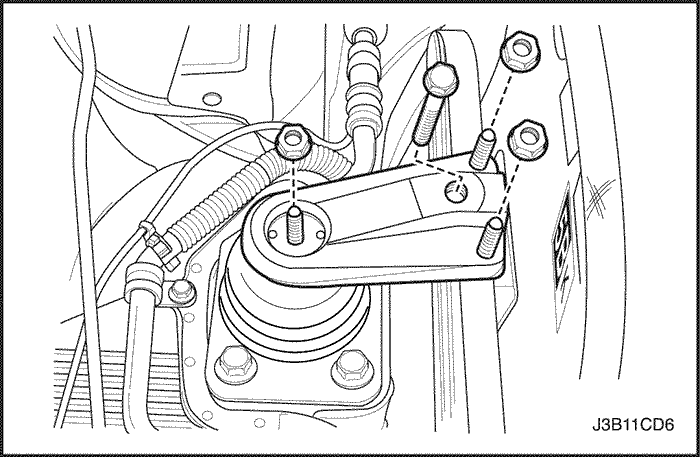
- Desmonte el soporte de fijación del motor. Consulte el apartado "Fijación del motor" de esta sección.
- Desmonte la tapa de los árboles de levas. Consulte el apartado "Tapa de los árboles de levas" de esta sección.
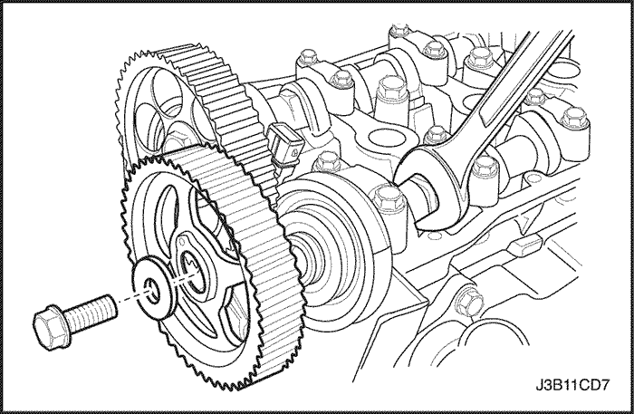
- Mientras sujeta el árbol de levas de admisión firmemente en su sitio, quite el tornillo del piñón del árbol de levas de admisión y desmonte el piñón.
- Mientras sujeta el árbol de levas de escape firmemente en su sitio, quite el tornillo del piñón del árbol de levas de escape y desmonte el piñón.
Aviso: Tenga mucho cuidado de no rayar, mellar o dañar los árboles de levas.
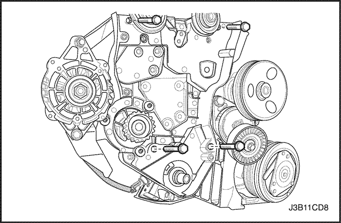
- Desmonte el tensor automático de la correa de distribución.
- Desmonte la polea loca de la correa de distribución.
- Desmonte la fijación derecha del motor. Consulte el apartado "Fijación del motor" de esta sección.
- Desmonte la tapa trasera de la correa de distribución.
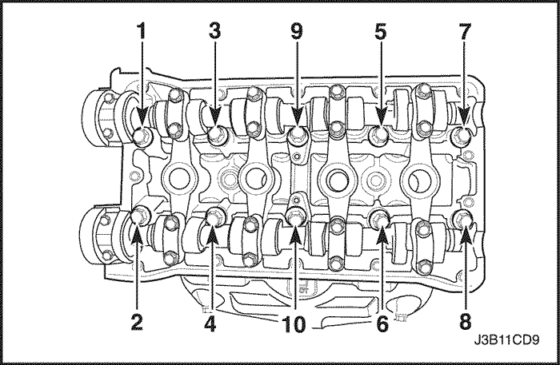
- Desmonte el colector de admisión/escape. Consulte el apartado "Colector de admisión/escape" de esta sección.
- Quite los tornillos de la culata poco a poco en la secuencia indicada y desmonte la culata.
Aviso: Cuando desmonte las culatas, evite la entrada de aceite del motor o de refrigerante en los cilindros.
- Desmonte la junta de la culata.
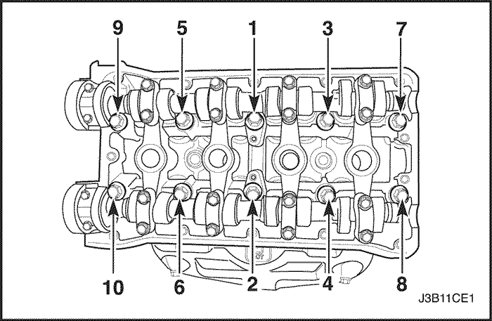
procedimiento de limpieza
- Limpie las superficies de asiento de la junta de la culata y del bloque del motor.
- Asegúrese de que las superficies de asiento de la junta de la culata y del bloque del motor no tengan marcas o arañazos profundos.
- Limpie los tornillos de la culata.
- Inspeccione el alabeo de la culata. Consulte el apartado "Componentes de la culata y del tren de válvulas" de esta sección.
procedimiento de montaje
- Coloque una junta nueva para la culata.
- Monte el colector de admisión/escape en la culata. Consulte el apartado "Colector de admisión/escape" de esta sección.
- Ponga los tornillos de la culata poco a poco siguiendo la secuencia indicada.
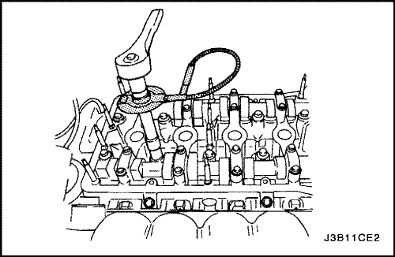
Apretar
Apriete los tornillos de la culata hasta 25 N•m (18 lb-pie) y apriete los tornillos otros 70 grados más 70 grados más 50 grados con la ayuda del medidor de par angular KM-470-B.
- Monte la fijación derecha del motor. Consulte el apartado "Fijación del motor" de esta sección.
- Conecte el cable del acelerador en el cuerpo del acelerador y el colector de admisión.
- Coloque los tornillos superiores del soporte de apoyo al colector de admisión.
Apretar
Apriete los tornillos superiores del soporte del colector de admisión hasta 25 N•m (18 lb-pie).
- Conecte el manguito de refrigerante del vaso de compensación al cuerpo del acelerador.
- Conecte a la culata la manguera de entrada al calefactor.
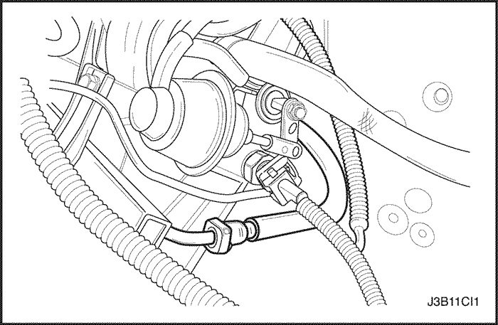
- Coloque el tornillo de retención superior del alternador.
Apretar
Apriete el tornillo de retención superior del alternador hasta 20 N•m (15 lb-pie).
- Conecte la tubería de alimentación de combustible a la rampa de inyectores.
- Conecte todos los manguitos de vacío desconectados y el manguito de vacío del servofreno en el colector de admisión.
- Coloque las tuercas de fijación del convertidor catalítico en la brida del colector de escape.
Apretar
Apriete las tuercas del convertidor catalítico a la brida del colector de escape hasta 40 N•m (30 lb-pie).
- Monte la tapa trasera de la correa de distribución.
- Coloque los tornillos de la tapa trasera de la correa de distribución.
Apretar
Apriete los tornillos de la tapa trasera de la correa de distribución hasta 10 N•m (89 lb-pulg.).
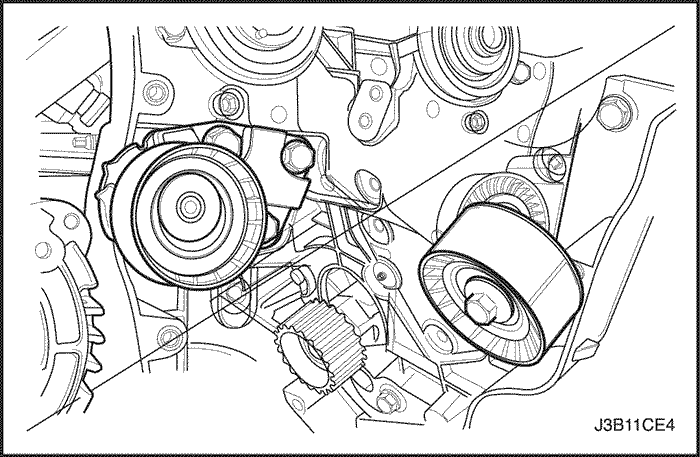
- Monte el tensor automático de la correa de distribución.
Apretar
Apriete los tornillos del tensor automático de la correa de distribución hasta 25 N•m (18 lb-pie).
- Monte la polea loca de la correa de distribución.
Apretar
Apriete el tornillo de la polea loca de la correa de distribución hasta 25 N•m (18 lb-pie).
Aviso: Tenga mucho cuidado de no rayar, mellar o dañar los árboles de levas.
- Monte el piñón del árbol de levas de admisión/escape.
Apretar
Apriete los tornillos del piñón del árbol de levas de admisión/escape hasta 67,5 N•m (49 lb-pie).
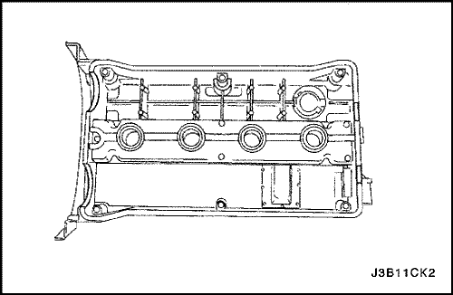
- Aplique una pequeña cantidad de sellante para juntas en las esquinas de las cubiertas delanteras de árbol de levas y en la parte superior de la junta entre la cubierta trasera de árbol de levas y la culata.
- Monte la cubierta de árbol de levas y su junta. Consulte el apartado "Tapa de los árboles de levas" de esta sección.
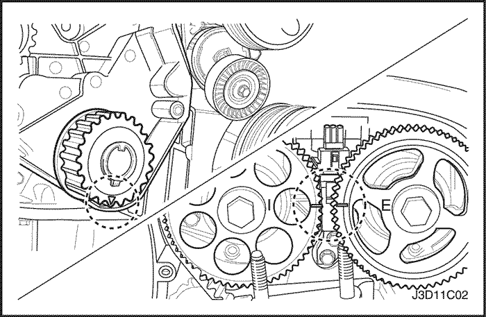
- Conecte los cables de encendido a las bujías.
- Ponga el tapón de llenado del aceite.
- Conecte el manguito de ventilación del motor a la cubierta de árbol de levas.
- Alinee las marcas de la puesta a punto en los piñones de los árboles de levas.
- Alinee la marca del piñón del cigüeñal con la muesca de la base de la tapa trasera de la correa de distribución.
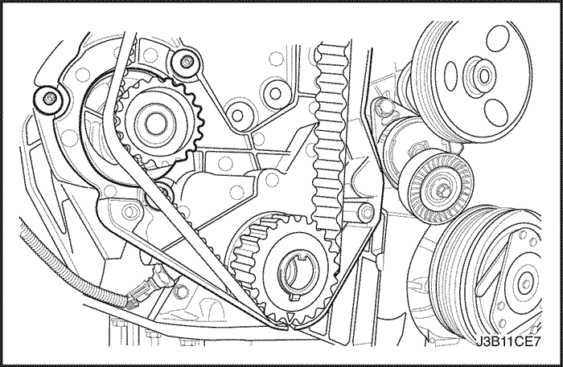
- Monte la correa de distribución.
- Haga girar la bomba de agua en el sentido de las agujas del reloj con la ayuda del dispositivo de ajuste de la correa de distribución J-42492 para tensar la correa de distribución.
Apretar
Apriete los tornillos de retención de la bomba de agua hasta 10 N•m (89 lb-pulg.).
- Compruebe y ajuste la tensión de la correa de distribución. Consulte el apartado "Comprobación y ajuste de la correa de distribución" de esta sección.
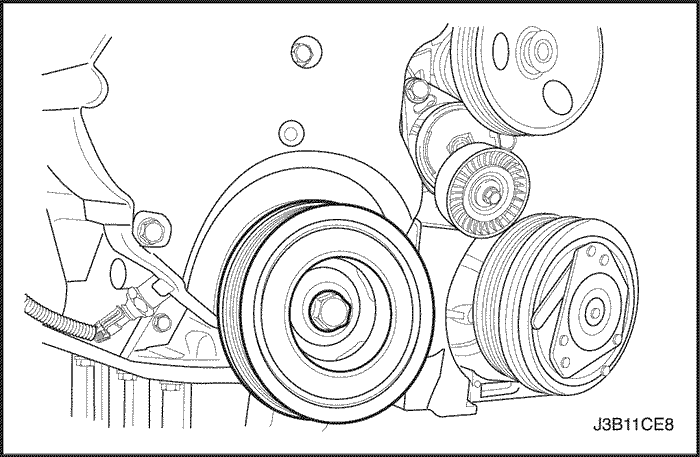
- Monte las tapas delanteras superior e inferior de la correa de distribución.
Apretar
Apriete los tornillos de las tapas delanteras superior e inferior de la correa de distribución hasta 10 N•m (89 lb-pulg.).
- Coloque el tornillo de la polea del cigüeñal.
Apretar
Apriete el tornillo de la polea del cigüeñal hasta 95 N•m (70 lb-pie) y apriete el tornillo otros 30 grados y luego 15 grados.
- Monte la correa de accionamiento de los accesorios. Consulte la Sección 6B, Bomba de la dirección asistida.
- Conecte el manguito superior del radiador a la caja del termostato.
- Monte la rueda delantera y la chapa guardabarros. Consulte la Sección 2E, Neumáticos y ruedas.
- Monte el alojamiento del filtro del aire.
Apretar
Apriete los tornillos de la carcasa del filtro del aire hasta 10•m (89 lb-pulg.).
- Conecte el tubo del respiradero a la tapa de los árboles de levas.
- Coloque el tornillo de la polea del cigüeñal.
- Enchufe el conector del MAT.
- Conecte el sensor de presión del colector de admisión, el sensor de temperatura del aire de admisión y el conector del sensor de temperatura del refrigerante.
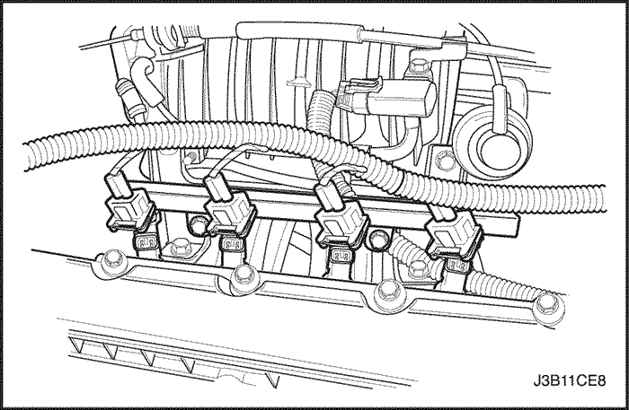
- Enchufe el conector de la bobina del DIS.
- Enchufe los conectores del cableado de los inyectores de combustible.
- Enchufe el conector del sensor de oxígeno y el terminal de masa del ECM en el colector de admisión.
- Monte el fusible de la bomba de combustible.
- Conecte el cable de masa negativo de la batería.
- Llene el sistema de refrigeración del motor. Consulte la Sección 1D, Sistema de refrigeración del motor.
Árboles de levas
Herramientas necesarias
Instalador del retén de aceite del cigüeñal EN-48803
Procedimiento de desmontaje
- Desmonte la tapa de los árboles de levas. Consulte el apartado "Tapa de los árboles de levas" de esta sección.
- Desmonte la correa de distribución. Consulte el apartado "Correa de distribución" de esta sección.
Aviso: Tenga mucho cuidado de no rayar, mellar o dañar los árboles de levas.
- Mientras sujeta el árbol de levas de admisión firmemente en su sitio, quite el tornillo del piñón del árbol de levas de admisión y desmonte el piñón.
- Mientras sujeta el árbol de levas de escape firmemente en su sitio, quite el tornillo del piñón del árbol de levas de escape y desmonte el piñón.

- Quite los tornillos de las tapas de los cojinetes de los árboles de levas poco a poco en la secuencia indicada para cada tapa.
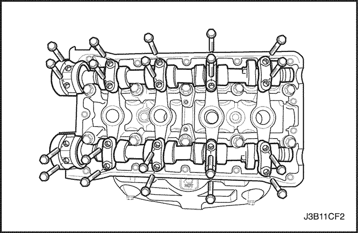
- Desmonte las tapas del árbol de levas de admisión/escape. Mantenga las posiciones correctas de cara al montaje.
- Desmonte el árbol de levas de admisión/escape.
procedimiento de montaje
Aviso: Tenga mucho cuidado de no rayar, mellar o dañar los árboles de levas.
- Lubrique las muñequillas del árbol de levas y las tapas de los cojinetes del árbol de levas con aceite del motor.
- Monte los árboles de levas de admisión/escape.
- Monte las tapas de los cojinetes del árbol de levas de admisión/escape en sus posiciones originales.
Apretar
Apriete los tornillos de las tapas de los cojinetes del árbol de levas de admisión/escape hasta 16 N•m (12 lb-pie).

- Monte el nuevo retén de aceite del cigüeñal con el instalador del retén de aceite del cigüeñal EN-48803.
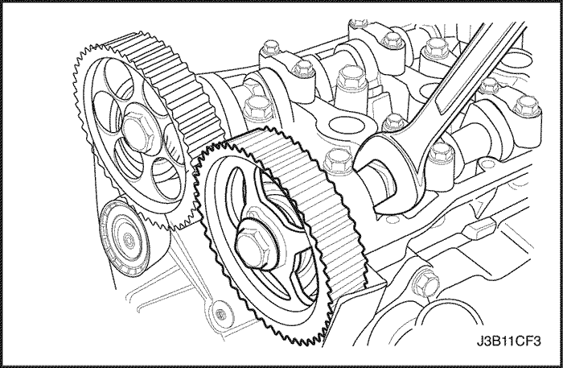
- Mida el juego axial del árbol de levas de admisión/escape. Consulte el apartado "Especificaciones del motor" de esta sección.
- Monte el piñón del árbol de levas de admisión/escape.
- Mientras sujeta los árboles de levas de admisión/escape firmemente en su sitio, coloque los tornillos del piñón del árbol de levas de admisión/escape.
Apretar
Apriete los tornillos del piñón del árbol de levas de admisión/escape hasta 67,5 N•m (49 lb-pie).
- Monte la correa de distribución. Consulte el apartado "Correa de distribución" de esta sección.
- Monte la cubierta de árbol de levas. Consulte el apartado "Tapa de los árboles de levas" de esta sección.
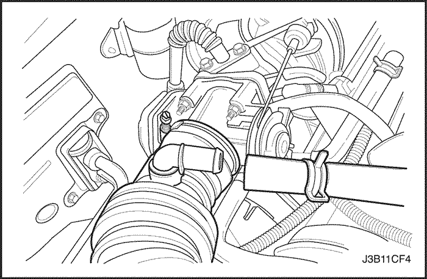
Coprobación y ajuste de la correa de distribución
Herramientas necesarias
Dispositivo de ajuste de la correa de distribución J-42492
Medidor de par angular KM-470-B
procedimiento de ajuste
- Desconecte el cable negativo de la batería.
- Desconecte del cuerpo del acelerador el manguito de salida del filtro de aire.
- Desconecte el tubo del respiradero de la tapa de los árboles de levas.
- Quite los tornillos de la carcasa del filtro del aire.
- Desmonte el alojamiento del filtro del aire.
- Desmonte la rueda delantera derecha. Consulte la Sección 2E, Neumáticos y ruedas.
- Desmonte la chapa guardabarros del paso de rueda delantero derecho.
- Desmonte la correa de accionamiento de los accesorios. Consulte la Sección 6B, Bomba de la dirección asistida.
- Quite el tornillo de la polea del cigüeñal.
- Desmonte la polea del cigüeñal.
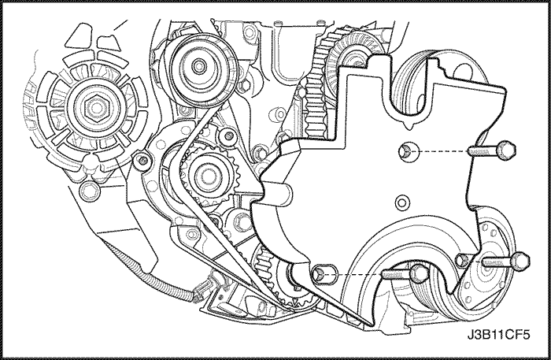
- Quite los tornillos de la tapa superior delantera de la correa de distribución.
- Desmonte la tapa superior delantera de la correa de distribución.
- Quite los tornillos de la tapa delantera inferior de la correa de distribución.
- Desmonte la tapa delantera inferior de la correa de distribución.
- Coloque el tornillo de la polea del cigüeñal.
- Haga girar el cigüeñal al menos una vuelta completa en el sentido de las agujas del reloj utilizando el tornillo de la polea del cigüeñal.
- Alinee la marca del piñón del cigüeñal con la muesca de la base de la tapa trasera de la correa de distribución.
- Alinee las marcas de la puesta a punto de los piñones de los árboles de levas.
- Afloje un poco los tornillos de retención de la bomba de agua.
- Haga girar la bomba de agua en el sentido de las agujas del reloj con la ayuda del dispositivo de ajuste de la correa de distribución J-42492.
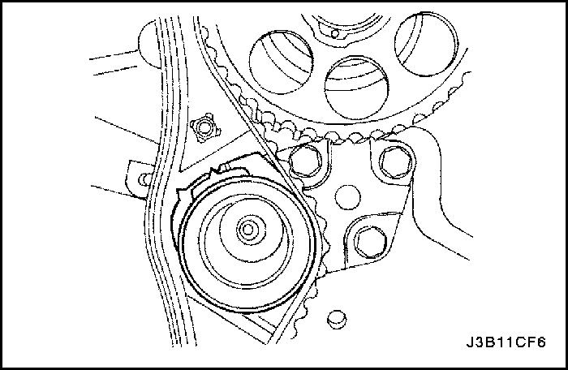
- Haga girar la bomba de agua en el sentido de las agujas del reloj hasta que el indicador del brazo de ajuste del tensor automático de la correa de distribución esté alineado con la muesca que hay en el soporte de dicho tensor.
- Apriete los tornillos de retención de la bomba de agua.
- Haga girar el cigüeñal dos vueltas completas en el sentido de las agujas del reloj utilizando la polea del cigüeñal.
- Afloje los tornillos de retención de la bomba de agua.
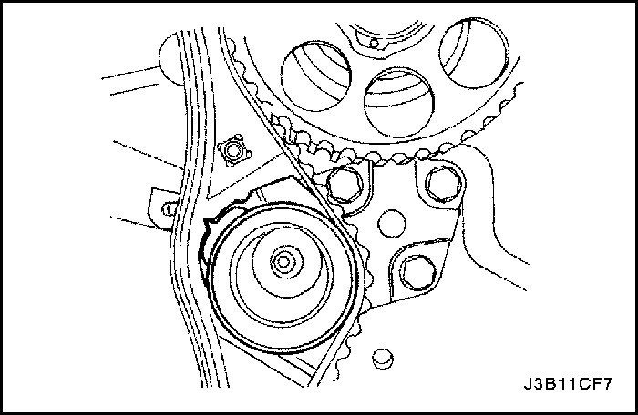
- Con la ayuda del dispositivo de ajuste de la correa de distribución J-42492, haga girar la bomba de agua hasta que el indicador del brazo de ajuste del tensor automático de la correa de distribución esté alineado con la muesca que hay en el soporte de dicho tensor.
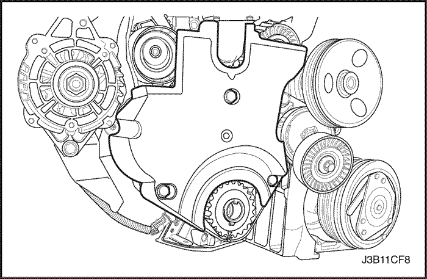
- Apriete los tornillos de retención de la bomba de agua.
Apretar
Apriete los tornillos de retención de la bomba de agua hasta 10 N•m (89 lb-pulg.).
- Quite el tornillo de la polea del cigüeñal.
- Monte las tapas delanteras superior e inferior de la correa de distribución.
- Ponga los tornillos de las tapas delanteras superior e inferior de la correa de distribución.
Apretar
Apriete los tornillos de la tapa delantera de la correa de distribución hasta 10 N•m (89 lb-pulg.).
- Monte la polea del cigüeñal.
- Coloque el tornillo de la polea del cigüeñal.
Apretar
Apriete el tornillo de la polea del cigüeñal hasta 95 N•m (70 lb-pie) y apriete el tornillo otros 30 grados y luego 15 grados.
- Monte la correa de accionamiento de los accesorios. Consulte la Sección 6B, Bomba de la dirección asistida.
- Monte la chapa guardabarros del paso de rueda delantero derecho.
- Monte la rueda delantera derecha. Consulte la Sección 2E, Neumáticos y ruedas.
- Monte el alojamiento del filtro del aire.
- Ponga los tornillos de la carcasa del filtro del aire.
Apretar
Apriete los tornillos de la carcasa del filtro del aire hasta 10•m (89 lb-pulg.).
- Conecte el manguito de salida del filtro de aire al cuerpo del acelerador.
- Conecte el tubo del respiradero a la tapa de los árboles de levas.
- Conecte el cable negativo de la batería.
Correa de distribución
Herramientas necesarias
Dispositivo de ajuste de la correa de distribución J-42492
Medidor de par angular KM-470-B
Procedimiento de desmontaje
- Desconecte el cable negativo de la batería.
- Desconecte del cuerpo del acelerador el manguito de salida del filtro de aire.
- Desconecte el tubo del respiradero de la cubierta de árbol de levas.
- Quite los tornillos de la carcasa del filtro del aire.
- Desmonte el alojamiento del filtro del aire.
- Desmonte la rueda delantera derecha. Consulte la Sección 2E, Neumáticos y ruedas.
- Desmonte la chapa guardabarros del paso de rueda delantero derecho.
- Desmonte la correa de accionamiento de los accesorios. Consulte la Sección 6B, Bomba de la dirección asistida.
- Quite el tornillo de la polea del cigüeñal.
- Desmonte la polea del cigüeñal.
- Quite los tornillos de la tapa superior delantera de la correa de distribución.
- Desmonte la tapa superior delantera de la correa de distribución.
- Quite los tornillos de la tapa delantera inferior de la correa de distribución.
- Desmonte la tapa delantera inferior de la correa de distribución.
- Coloque el tornillo de la polea del cigüeñal.
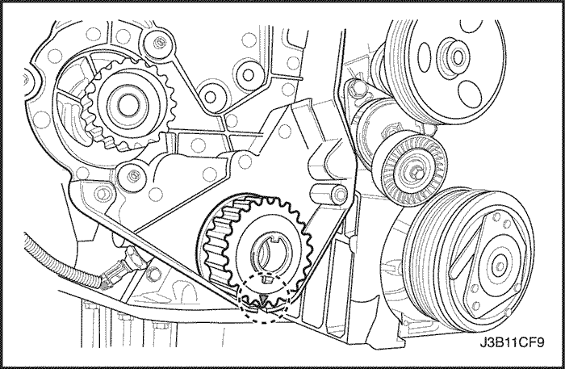
- Utilizando el tornillo de la polea del cigüeñal, haga girar éste en el sentido de las agujas del reloj hasta que la marca de puesta a punto del piñón del cigüeñal quede alineada con la muesca de la base de la tapa trasera de la correa de distribución.
- Afloje un poco los tornillos de retención de la bomba de agua.
- Con la ayuda del dispositivo de ajuste de la correa de distribución J-42492, haga girar la bomba de agua en sentido contrario al de las agujas del reloj para reducir la tensión de la correa de distribución.
- Desmonte el soporte de fijación derecho del motor. Consulte el apartado "Fijación del motor" de esta sección.
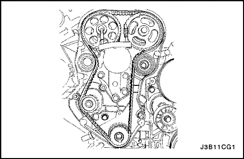
- Desmonte la correa de distribución.
procedimiento de montaje
- Alinee la marca del piñón del cigüeñal con la muesca de la parte inferior de la tapa trasera de la correa de distribución.
- Alinee las marcas de la puesta a punto en los piñones de los árboles de levas.
- Monte la correa de distribución.
- Monte el soporte de fijación derecho del motor. Consulte el apartado "Fijación del motor" de esta sección.
- Haga girar la bomba de agua en el sentido de las agujas del reloj con la ayuda del dispositivo de ajuste de la correa de distribución J-42492.
- Haga girar la bomba de agua en el sentido de las agujas del reloj hasta que el indicador del brazo de ajuste del tensor automático de la correa de distribución esté alineado con la muesca que hay en el soporte de dicho tensor.
- Apriete los tornillos de retención de la bomba de agua.
- Haga girar el cigüeñal dos vueltas completas en el sentido de las agujas del reloj utilizando el tornillo de la polea del cigüeñal.
- Afloje los tornillos de retención de la bomba de agua.
- Haga girar la bomba de agua hasta que el indicador del brazo de ajuste del tensor automático de la correa de distribución quede alineado con el indicador del soporte de dicho tensor.
- Apriete los tornillos de retención de la bomba de agua.
Apretar
Apriete los tornillos de retención de la bomba de agua hasta 10 N•m (89 lb-pulg.).
- Quite el tornillo de la polea del cigüeñal.
- Monte las tapas delanteras superior e inferior de la correa de distribución.
- Ponga los tornillos de las tapas delanteras superior e inferior de la correa de distribución.
Apretar
Apriete los tornillos de la tapa delantera de la correa de distribución hasta 10 N•m (89 lb-pulg.).
- Monte la polea del cigüeñal.
- Coloque el tornillo de la polea del cigüeñal.
Apretar
Apriete el tornillo de la polea del cigüeñal hasta 95 N•m (70 lb-pie) y apriete el tornillo otros 30 grados y luego 15 grados.
- Monte la correa de accionamiento de los accesorios. Consulte la Sección 6B, Bomba de la dirección asistida.
- Monte la chapa guardabarros del paso de rueda delantero derecho.
- Monte la rueda delantera derecha. Consulte la Sección 2E, Neumáticos y ruedas.
- Monte el alojamiento del filtro del aire.
- Ponga los tornillos de la carcasa del filtro del aire.
Apretar
Apriete los tornillos de la carcasa del filtro del aire hasta 10•m (89 lb-pulg.).
- Conecte el manguito de salida del filtro de aire al cuerpo del acelerador.
- Conecte el tubo del respiradero a la tapa de los árboles de levas.
- Conecte el cable negativo de la batería.
 | |  | |
| © Copyright Chevrolet Europe. Reservados todos los derechos |